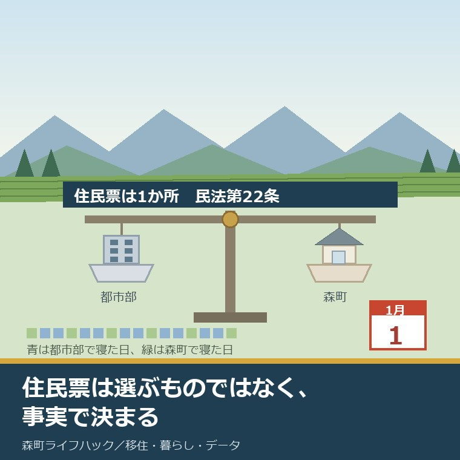
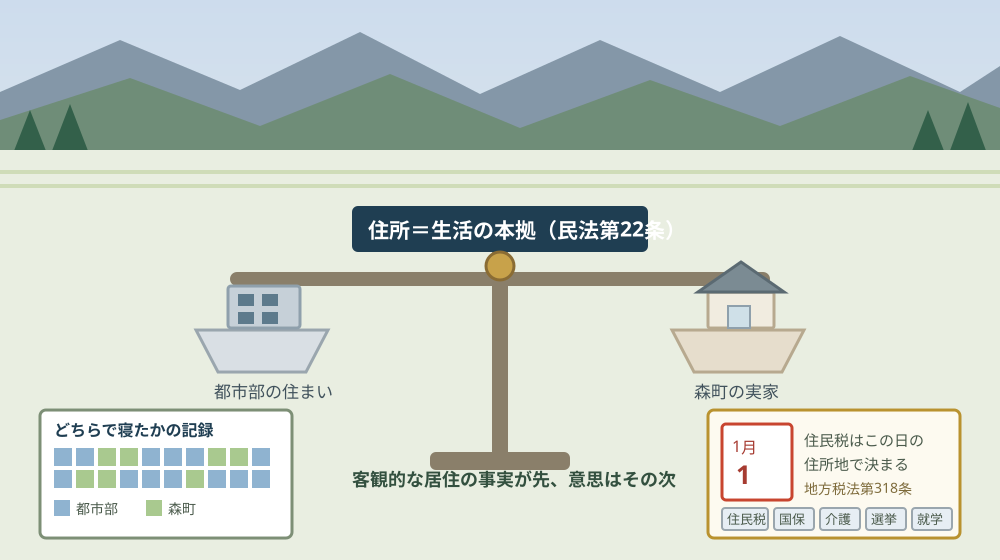
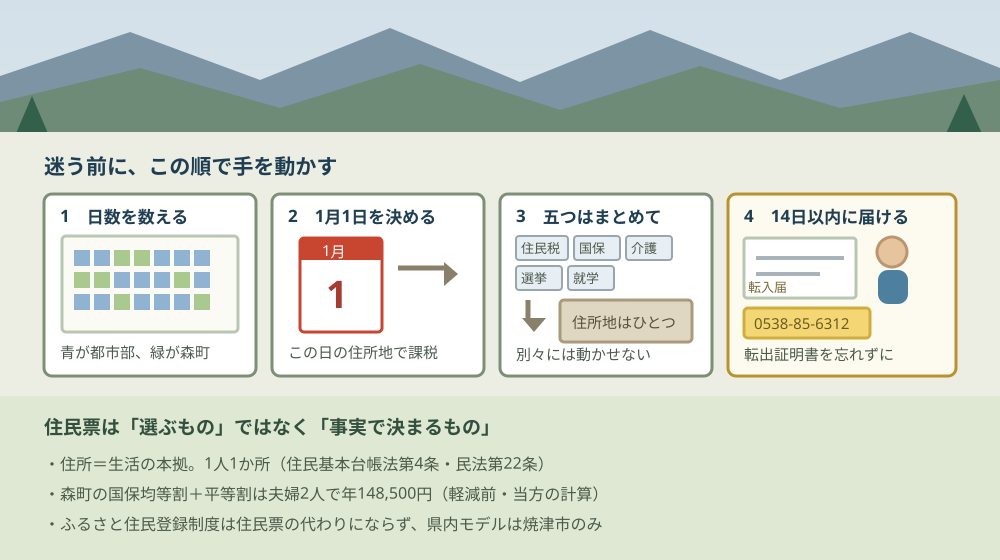

二拠点生活の住民票はどちらに置くか｜森町の実態

この記事の要点
Q. 都会の仕事も続けます。住民票は森町と都市部、どちらに置くのが得ですか。
A. 選べません。住所は民法第22条の「生活の本拠」で、1人1か所です。二拠点向けの特例は確認できませんでした。総務省のふるさと住民登録制度は住民票の代わりにならず、静岡県内のモデル選定は焼津市のみ。森町は国土交通省側の二地域居住で進んでいます。判断の材料は、実際に寝た日数です。
静岡県周智郡森町（遠州森町）に土地や実家があって、都市部の仕事も続けたいという方から、必ず同じ質問を受けます。「住民票は、どちらに置いたほうが得ですか」というものです。
私は磐田市で小さな不動産業を営みながら、森町の空き家・農地・実家じまいのご相談を受けています。今日は2026年8月30日です。この質問には、まず前提を直すところから答えます。
住民票は「置く場所を選ぶもの」ではありません。法律の側から見ると、住所は生活の実態で決まります。得か損かで選べる項目ではない、というのが出発点です。
そのうえで、実務では選択の余地がある場面もあります。どちらの家でも寝ている人が、どちらを本拠と考えるか。この記事は、そこを判断するための材料を並べたものです。
公式情報から確定できること
2026年8月30日に、e-Gov法令検索、総務省の公表資料、国土交通省の報道発表、静岡県と森町の公表ページから確認できたことを順に並べます。出典は記事の末尾にまとめています。
一つ目。住民基本台帳法第4条は、住所の意味を勝手に変えてはいけないと定めています。条文は「住民の住所に関する法令の規定は、地方自治法（昭和二十二年法律第六十七号）第十条第一項に規定する住民の住所と異なる意義の住所を定めるものと解釈してはならない」です。
二つ目。その住所の中身は、民法第22条にあります。「各人の生活の本拠をその者の住所とする」。生活の本拠は単数形で書かれています。ここが「1か所しか置けない」の根拠です。
三つ目。総務省の資料も、同じ整理をしています。自治行政局の資料「住民基本台帳制度の意義等について」（令和3年6月30日）には「住所とは、地方自治法第10条第１項に規定する『住所』と同一であり、民法第22条と同様に各人の生活の本拠をいう」と書かれています。
四つ目。判断が難しい場合があることも、同じ資料が認めています。「人の生活環境が複雑化した今日においては、何をもって生活の本拠と判断すべきか極めて困難なケースも生じ得るが、個人の生活の実質関係を考慮して具体的に決定するほかない」と書かれています。
五つ目。判断の方法は、客観的事実が先です。同じ資料は「現在では、客観的居住の事実を基礎とし、これに当該居住者の主観的居住意思を総合して決定することとされている」としています。気持ちだけでは決まらない、という順序です。
六つ目。市町村の間で判断が割れたときの仕組みもあります。住民基本台帳法第33条により、住所の認定について市町村長の意見が異なる場合は、知事などが60日以内に1つに決めます。2か所同時に登録されたままにはなりません。
七つ目。届出の期限は14日です。住民基本台帳法第22条は転入届を「転入をした日から十四日以内」、第23条は転居届を同じく14日以内、第24条は転出届を「あらかじめ」と定めています。
八つ目。届け出ないと過料があります。住民基本台帳法第52条第2項は、正当な理由なく届出をしない者に5万円以下の過料を科すと定めています。
九つ目。個人住民税は1月1日で決まります。地方税法第318条は「個人の市町村民税の賦課期日は、当該年度の初日の属する年の一月一日とする」と定めています。第39条が県民税について同じ定めです。
十番目。森町の公表ページにも同じ説明があります。「1月1日現在森町に住所がある方は、年の途中で他市町村へ転出されても森町での課税となります」。担当は税務課町民税係です。
十一番目。健康保険・介護保険・選挙・就学も、すべて住所地が基準です。国民健康保険法第5条は「都道府県の区域内に住所を有する者」、介護保険法第9条は「市町村の区域内に住所を有する六十五歳以上の者」等、公職選挙法第21条第1項は住所地の住民基本台帳に引き続き3か月以上記録されていること、学校教育法施行令第1条は住所地の市町村教育委員会が学齢簿を編製し、それは住民基本台帳に基づくと定めています。
十二番目。総務省が「ふるさと住民登録制度」を準備しています。制度のサイトは2026年7月24日に公開され、よくある質問のページは2026年8月19日に公開されています。所管は自治行政局の地域情報化企画室です。
十三番目。この制度に法律の根拠は確認できませんでした。総務省の資料が挙げているのは、令和7年6月13日に閣議決定された骨太方針・地方創生2.0基本構想・デジタル社会の重点計画と、予算措置です。住民基本台帳法の改正には触れていません。
十四番目。登録は2種類です。ベーシック登録は要件がなく上限も更新もありません。プレミアム登録は年3回以上の担い手活動などの要件があり、マイナンバーカードが必要で、3団体まで、年1回の更新が要ります。
十五番目。プレミアム登録は住所地ではできません。総務省のよくある質問には「ベーシック登録については、住所地の自治体も登録できますが、プレミアム登録については、住所地における登録はできません」と書かれています。住民票と重ならない設計です。
十六番目。返礼品は禁止されています。総務省の制度設計資料には「登録の特典として、現地に行かなくても物的恩恵が及ぶ、いわゆる『返礼品』を設けることは禁止」と記されています。
十七番目。モデル事業の選定に、森町は入っていません。令和8年3月27日の発表によると、161団体の応募から連携モデル7道県（域内の応募市町村37団体）と個別市町村モデル21市町村が選ばれました。静岡県内で選ばれたのは焼津市のみです。
十八番目。制度の開始は2026年度中を目指す段階です。総務省のよくある質問に「2026年度中の制度開始を目指して準備を進めています」とあります。アプリのリリースは年度末の予定です。
十九番目。一方、二地域居住のほうは法律で動いています。「広域的地域活性化のための基盤整備に関する法律の一部を改正する法律」が令和6年5月15日に成立し、同年11月1日に施行されました。法律上、二地域居住は「特定居住」と呼ばれます。
二十番目。森町はこちらで県内の先頭にいます。静岡県が指定した特定居住支援法人の第1号は、令和7年5月15日指定の一般社団法人モリマチリノベーション（森町）です。森町特定居住促進計画は令和8年3月31日に策定され、令和8年度から二地域居住コーディネーターを配置すると公表されています。計画の中身は森町特定居住促進計画の記事にまとめました。
二十一番目。森町の転入・転出の窓口は住民生活課住民係です。電話は0538-85-6312。転入届の期限は「引っ越しが完了した日から14日以内」で、転出証明書が必要です。
二十二番目。森町の人口は2026年8月1日現在で16,422人、世帯数は6,763世帯です。男8,213人、女8,209人。このページの更新日は2026年8月5日です。

この図で天秤にしたのには理由があります。住民票は選択ではなく、事実の重さの比較だからです。どちらが得かではなく、どちらが本拠かを決める作業になります。
もう一つ、右下に5枚の札を並べました。住民税・国民健康保険・介護保険・選挙人名簿・小中学校の就学。この5つは、住所を動かすと全部いっしょに動きます。1枚だけ動かすことはできません。
住民票を動かすと、何が住所地基準で動くか
住所地が基準になる主なものを、根拠条文とあわせて並べます。条文の確認はe-Gov法令検索で行いました。
| 項目 | 基準 | 根拠 |
|---|---|---|
| 個人町県民税 | 1月1日時点の住所地 | 地方税法第318条（県民税は第39条） |
| 国民健康保険 | 住所地。住所を有するに至った日に資格取得 | 国民健康保険法第5条・第7条・第8条 |
| 介護保険 | 住所地（65歳以上／40歳以上65歳未満の医療保険加入者） | 介護保険法第9条 |
| 選挙人名簿 | 住所地の住民基本台帳に引き続き3か月以上 | 公職選挙法第21条第1項 |
| 小中学校の就学 | 住所地。学齢簿は住民基本台帳に基づく | 学校教育法施行令第1条第1項・第2項 |
| 児童手当 | 住所地の市町村長の認定 | 児童手当法第7条第1項 |
| 転入届 | 転入をした日から14日以内 | 住民基本台帳法第22条 |
| 届け出ない場合 | 5万円以下の過料 | 住民基本台帳法第52条第2項 |
この表でいちばん見落とされやすいのが、いちばん下の行です。住民票を動かさないことそのものに、5万円以下の過料が定められています。実際に科されるかどうかは別として、条文としては存在します。
逆に、いちばん上の行は使い方がある項目です。個人住民税は1月1日時点の住所地でしか課されません。年の途中で動いても、その年度は元の市町村の課税になります。転入の時期を年内にするか年明けにするかで、1年分の納付先が変わります。
就学の行は、子どもがいる家庭では最初に効きます。学齢簿は住民基本台帳に基づいて編製されます。住民票を動かさないまま森町の学校に通うことはできません。学期の区切りとの合わせ方は九月に転入するか四月に合わせるかを整理した記事に書きました。
森町に住民票を置くと、定額でいくらかかるか
ここからは割り戻しです。森町の公表ページに載っている税率と金額を、そのまま並べます。
| 税目 | 所得割 | 均等割 | 平等割 | 限度額 |
|---|---|---|---|---|
| 個人町県民税（町民税） | 課税所得金額×6.00％ | 3,000円 | — | — |
| 個人町県民税（県民税） | 課税所得金額×4.00％ | 1,400円 | — | — |
| 森林環境税（国税） | — | 1,000円 | — | — |
| 国民健康保険税 医療分 | 6.90％ | 26,600円 | 23,600円 | 67万円 |
| 同 後期高齢者支援金分 | 2.80％ | 10,100円 | 8,700円 | 26万円 |
| 同 介護納付金分 | 1.90％ | 19,500円 | — | 17万円 |
| 同 子ども・子育て支援分 | 0.24％ | 1,900円 | — | 3万円 |
この表の右側3列、つまり所得割ではない部分を足してみます。40歳から64歳の夫婦2人が国民健康保険に入る場合、均等割と平等割の合計は年148,500円です。医療分76,800円、後期高齢者支援金分28,900円、介護納付金分39,000円、子ども・子育て支援分3,800円の合計です。
ここに個人町県民税の均等割を足します。1人5,400円ですから2人で10,800円、合わせて年159,300円になります。月に直すと13,275円です。
この計算は私が公表値を足したもので、森町が公表している合計額ではありません。国民健康保険税には所得に応じた軽減制度があるため、実際の額はこれより下がる世帯があります。そこは必ず税務課町民税係で確認してください。
それでも、この159,300円という数字を出しておく意味はあります。二拠点生活では、住まいの費用が二重になるだけでなく、公的な負担も片方に寄ります。森町側に住民票を置くなら、この定額部分が森町へ、都市部に置くなら都市部へ入ります。
不動産の目で言えば、これは「空き家の年間維持費」と並べて見る数字です。使っていない家の固定資産税と草刈りと点検に年数万円から十数万円かかる家は珍しくありません。二拠点生活は、その両方を同時に払う暮らし方でもあります。空き家側の実際の価格帯は森町の空き家バンク23件の記事にまとめました。
「ふるさと住民登録制度」は住民票の代わりにならない
二拠点生活の話をすると、必ず総務省の新しい制度の名前が出ます。ここは誤解が起きやすいので、確認できたことだけを書きます。
ふるさと住民登録制度は、住民基本台帳とは別の仕組みです。総務省の制度のページ、よくある質問、制度設計の資料、令和8年3月27日のガイドライン第1.0版のいずれにも、住民基本台帳へ二重に登録できるという記載はありませんでした。
むしろ、逆向きの記載があります。「プレミアム登録については、住所地における登録はできません」。住んでいる場所では登録できない設計になっています。
制度の狙いは関係人口です。総務省の資料は、今後10年間で関係人口を実人数1,000万人、延べ人数1億人にするという目標を掲げています。システム構築の予算は令和7年度補正で32.1億円（デジタル庁一括計上）です。
二拠点居住者は、対象イメージに名指しで入っています。「ふるさとに思いを馳せる方」「地域の力になりたい方」「災害ボランティア」「二地域に居住する方」の4つが並んでいます。年間10日以上の滞在を基準として自治体が設定した要件を満たす長期滞在者は、登録証に明示できるとされています。
ただし、森町はここに入っていません。モデル事業に選ばれた静岡県内の自治体は焼津市だけです。連携モデルの7道県にも静岡県は入っていません。
ここに、この記事でいちばん書きたかった食い違いがあります。二地域居住には、総務省側と国土交通省側の2本の入口があり、森町は国土交通省側だけに乗っています。県内で最初の特定居住支援法人を出した町が、総務省の新制度のモデルには入っていない。
良い点：住所を1か所に絞るルールが、はっきりしていること
公表資料を並べたうえで、評価できる点が4つありました。順に書きます。
一つ目。基準が明文で1つに絞られていることです。住民基本台帳法第4条と民法第22条で、住所は「生活の本拠」1か所。判断が割れたら第33条で知事などが60日以内に決める。曖昧なところが残らない設計になっています。
二つ目。判断が難しいことを、国の資料が認めていることです。「極めて困難なケースも生じ得る」と書いたうえで、「個人の生活の実質関係を考慮して具体的に決定するほかない」と続けている。断定できないことを断定していません。
三つ目。新制度が住民票と重ならないように作られていることです。プレミアム登録は住所地ではできない。返礼品は禁止。ふるさと納税で起きた返礼品の競争を、最初から遮断する形になっています。
四つ目。森町が法律に基づく側の制度で先に動いていることです。特定居住支援法人の県内第1号が令和7年5月15日、計画の策定が令和8年3月31日、コーディネーターの配置が令和8年度。名前が新しいだけの取り組みではなく、法律の枠組みに載った動き方をしています。
注文したい点：二拠点生活の側から見て足りないところ
ここからは、二拠点で暮らそうとしている側の立場での注文を4つ書きます。制度の批判ではなく、使う側からの報告です。
一つ目。「二拠点生活の場合はどう判断するか」を正面から書いた公的な案内が見つからないことです。総務省の一般論はあります。ただ、平日を都市部、週末を森町で過ごす人がどちらを本拠とするか、という形の設問への公的な回答は確認できませんでした。検索の上位に出てくるのは民間の解説ばかりです。
二つ目。入口が2本あることが、住民の側から見えにくいことです。総務省のふるさと住民登録制度と、国土交通省の特定居住。目的も根拠も違うのに、どちらも「二地域居住」の言葉で語られます。森町に関わろうとする人は、まずこの2本を見分けるところから始めることになります。
三つ目。森町の公表ページに、二拠点生活者向けの入口が無いことです。転入届と転出届のページはあります。二地域居住のページもあります。ただ、その中間、つまり「住民票は動かさないが森町で過ごす日が増える人」が何をどこに届けるのかは書かれていません。
四つ目。国民健康保険税のページの更新日と中身が食い違っていることです。本文には令和8年度の税率が入っているのに、ページの更新日は2024年4月1日と表示されています。金額を確かめる側にとって、更新日は最初に見る欄です。ここは未確認のまま残します。

この図で一段目にカレンダーを置いたのには理由があります。住所の判断は客観的な事実が先だからです。どちらで何日寝たかは、あとから作れません。記録がある人と無い人では、窓口での説明の重さが変わります。
三段目で5枚の札をまとめて箱に入れているのは、分けられないという意味です。住民税だけ都市部、就学だけ森町、という置き方はできません。住所を動かすと、5つが同時に動きます。
対案・結論：今日、ご家族が確かめられること
住民票をどちらに置くかを今日決めなくても、進められることがあります。順番に5つ書きます。
一つ目。今日から、どちらで寝たかをカレンダーに記録してください。紙でもスマートフォンでも構いません。1年分たまると、生活の本拠がどちらかは自分で分かります。窓口で聞かれたときに出せる材料にもなります。
二つ目。1月1日をどちらで迎えるかを、先に決めてください。個人町県民税の賦課期日は1月1日です。年内に転入するか、年明けに転入するかで、その年度の納付先が変わります。引っ越しの日取りを考えるときの軸が1本増えます。
三つ目。森町の住民生活課住民係（0538-85-6312）に、転入届に必要なものを聞いてください。期限は引っ越しが完了した日から14日以内、転出証明書が要ります。マイナンバーカードの住所変更、国民健康保険、介護保険、児童手当は、それぞれ担当の係が違います。1回の電話で全部聞いておくと、当日が短くなります。
四つ目。森町側で住む家の候補を、住民票を置ける形かどうかで見てください。短期の滞在先と、住民票を置く住まいは別物です。町の計画に載るお試し居住住宅の扱いについては森町のお試し移住住宅を追いかけた記事に、町営住宅の戸数と条件は森町営住宅121戸の記事に書きました。
五つ目。総務省のふるさと住民登録制度は、いったん判断材料から外してください。2026年度中の開始を目指す段階で、静岡県内のモデルは焼津市のみ。森町との関わり方を今日決めるための道具にはなりません。制度が動き出してから、あらためて見れば足ります。
ここまでやっても、住民票を今日動かす必要はありません。今日の成果は、「どちらが得か」という問いを「どちらが本拠か」という問いに置き換えたことです。この置き換えができると、迷う時間が短くなります。
家族に残す記録
調べた内容は、その日のうちに1枚にまとめてください。二拠点生活の検討は数年にわたることが多く、途中で相続や介護が挟まると前提が変わります。
書き出す項目は6つです。①どちらで寝た日数（月ごとの集計） ②1月1日をどちらで迎えたか（年ごと） ③住民票を置いている市町村と、置いた年月 ④国民健康保険と介護保険の加入先 ⑤子どもの就学先と学齢簿のある市町村 ⑥森町側の家の名義と、道路・境界の状況。
加えて、確認できなかったことも同じ紙に残します。「二拠点生活での生活の本拠の判断について、公的なQ&Aは確認できず」「森町の国民健康保険税ページの正しい更新日は不明」の2つです。次に窓口へ行くときの質問が、この欄からそのまま作れます。
もう一つ、不動産の側から一行足してください。森町側の家を、いずれ売る・貸す・住むのどれで考えているか。住民票をどちらに置くかは、この答えとつながっています。売る前提の家に住民票を置くと、譲渡のときの扱いが変わることがあります。個別の判断は税理士にご確認ください。
大石の視点
ここからは公表資料の話ではなく、私がどう見ているかを書きます。二拠点生活の相談で立ち会った現場の一場面は手元の記録に無いので、体験談としてではなく意見として明示します。
私はこう言い切ります。住民票をどちらに置くか迷っている時点で、答えはたいてい「実際に多く寝ている側」です。迷いが生まれるのは、得か損かで考えているときで、事実で考えると迷いようがありません。
理由は、判断の基準が客観的事実を先に置いているからです。総務省の資料も「客観的居住の事実を基礎とし、これに主観的居住意思を総合して決定する」としています。気持ちは後ろに置かれます。
もう一つ、私が現場で感じていることを書きます。二拠点生活の相談は、たいてい「まだ住民票の話ではない」段階で来ます。親の家をどうするか、農地をどうするか、その延長で「自分もときどき住むかもしれない」という形で始まります。
その順序で言えば、住民票の話は最後です。先に見るべきは、道路の幅と名義と境界と、水道が生きているかどうか。この4つが詰まっていると、住民票をどちらに置くかを考える前に、住める家かどうかで止まります。
一方で、引っかかっていることもあります。制度の入口が2本あることです。総務省のふるさと住民登録制度と、国土交通省の特定居住。名前も根拠も違い、森町は片方だけに乗っています。
ここは私にも分かりません。森町が総務省側のモデルに応募したのかどうかも、応募して選ばれなかったのかも、公表資料からは読み取れないのです。推測として書くなら、私は「国土交通省側で計画とコーディネーターまで進んでいるので、まずそちらを固める判断だったのではないか」と読んでいます。ただし裏付けはありません。
もう一つ、私が森町の並びで筋が通っていると思う点があります。森町は「住民票を移すか移さないか」の二択から降りると公表しています。二地域居住のページには「これまでの『住民票を移すか、移さないか』という0か100かの選択ではなく、『今の仕事や生活を維持しながら、地域とも深く関わる』という新しい暮らしの形」と書かれています。
この一文は、私の実感と合います。森町に関わる方の多くは、移住するかどうかを決めきれないまま何年も関わっています。その状態を欠点として扱わない書き方を、町が公表ページでしている。これは小さいことではありません。
ただ、その考え方と住民基本台帳の仕組みは、そのままではつながりません。住民票のほうは、いまも0か100かです。制度が立派でも、窓口で埋める用紙は1か所しか書けません。ここを埋めるのが、令和8年度から置かれる二地域居住コーディネーターの仕事になるのだと私は見ています。
最後に、二拠点を考えているご家族へ。私は「まだ決めない」という状態を、悪いことだとは思っていません。ただ、寝た日数の記録だけは今日から取れます。1年後にどの選択をするにしても、この記録は必ず効きます。
まとめ
この記事で確認した事実を、最後に並べ直します。すべて2026年8月30日時点で公表されている内容です。
- 住民基本台帳法第4条は、住民の住所を地方自治法第10条第1項の住所と異なる意味に解釈してはならないと定めている
- 民法第22条は「各人の生活の本拠をその者の住所とする」と定めており、住所は1人1か所
- 総務省自治行政局「住民基本台帳制度の意義等について」（令和3年6月30日）は「客観的居住の事実を基礎とし、これに当該居住者の主観的居住意思を総合して決定する」としている
- 同資料は「何をもって生活の本拠と判断すべきか極めて困難なケースも生じ得る」とも記している
- 市町村長の意見が異なる場合、住民基本台帳法第33条により知事などが60日以内に1つに決める
- 転入届は転入をした日から14日以内（住民基本台帳法第22条）。届け出ない場合は5万円以下の過料（同法第52条第2項）
- 個人市町村民税の賦課期日は1月1日（地方税法第318条）。森町も「1月1日現在森町に住所がある方は、年の途中で他市町村へ転出されても森町での課税となります」と公表
- 国民健康保険（国保法第5条・第7条・第8条）、介護保険（介護保険法第9条）、選挙人名簿（公職選挙法第21条第1項・3か月要件）、小中学校の就学（学校教育法施行令第1条）、児童手当（児童手当法第7条第1項）は、いずれも住所地が基準
- 森町の個人町県民税の所得割は町民税6.00パーセント・県民税4.00パーセント、均等割は森林環境税1,000円・県民税1,400円・町民税3,000円の合計5,400円
- 森町の国民健康保険税（令和8年度）は医療分6.90パーセント・均等割26,600円・平等割23,600円・限度額67万円、後期高齢者支援金分2.80パーセント・10,100円・8,700円・26万円、介護納付金分1.90パーセント・19,500円・限度額17万円、子ども・子育て支援分0.24パーセント・1,900円・限度額3万円
- 40歳から64歳の夫婦2人の場合、国民健康保険税の均等割と平等割の合計は年148,500円、個人町県民税の均等割2人分10,800円を加えると年159,300円、月13,275円（執筆者の計算・軽減制度は考慮していない）
- ふるさと住民登録制度は総務省自治行政局の地域情報化企画室が所管。制度のサイト公開は2026年7月24日、よくある質問の公開は2026年8月19日
- 同制度に法律の根拠は確認できず、令和7年6月13日の閣議決定と予算措置が根拠として示されている。システム構築の予算は令和7年度補正で32.1億円
- ベーシック登録は要件・上限・更新なし。プレミアム登録は年3回以上の担い手活動等が要件で、マイナンバーカードが必要、3団体まで、年1回更新。「プレミアム登録については、住所地における登録はできません」と明記
- 返礼品は禁止。目標は今後10年間で関係人口 実人数1,000万人・延べ1億人。制度開始は2026年度中を目指す段階
- モデル事業は161団体の応募から連携モデル7道県（域内応募市町村37団体）と個別市町村モデル21市町村を選定（令和8年3月27日発表）。静岡県内は焼津市のみで、森町は含まれない
- 「広域的地域活性化のための基盤整備に関する法律の一部を改正する法律」は令和6年5月15日成立・同年11月1日施行。法律上、二地域居住は「特定居住」、支援法人は「特定居住支援法人」
- 静岡県の特定居住支援法人の第1号は一般社団法人モリマチリノベーション（森町・令和7年5月15日指定）。森町特定居住促進計画は令和8年3月31日策定、令和8年度から二地域居住コーディネーターを配置
- 森町の転入・転出の窓口は住民生活課住民係（0538-85-6312）。転入届は引っ越しが完了した日から14日以内、転出証明書が必要
- 森町の人口は16,422人、世帯数6,763世帯（2026年8月1日現在・更新日2026年8月5日）
よくある質問
Q1. 二拠点生活で、住民票を2か所に置けますか。
A1. 置けません。住民基本台帳法第4条は、住民の住所を地方自治法第10条第1項の住所と異なる意味に解釈してはならないと定めています。その住所は民法第22条の「生活の本拠」で、1人につき1か所です。市町村の間で判断が分かれたときは、住民基本台帳法第33条により知事などが60日以内に1つに決めます。二拠点生活向けの特例は2026年8月30日時点で確認できませんでした。
Q2. 総務省の「ふるさと住民登録制度」を使えば、森町の住民になれますか。
A2. なりません。ふるさと住民登録制度は住民基本台帳とは別建ての仕組みで、2026年度中の制度開始を目指して準備が進んでいます。プレミアム登録は住所地では登録できないと明記されており、住民票の代わりにはなりません。モデル事業に選ばれた静岡県内の自治体は焼津市のみで、森町は含まれていません。
Q3. 住民票を森町に移すと、支払いはどう変わりますか。
A3. 個人町県民税は1月1日時点の住所地で課されます（地方税法第318条）。森町の所得割は町民税6パーセント・県民税4パーセント、均等割は森林環境税1,000円と県民税1,400円と町民税3,000円の合計5,400円です。国民健康保険税には所得割のほかに定額の均等割と平等割があり、所得が少なくてもかかります（軽減制度あり）。
最後に一つだけ。ここに書いた条文、税率、金額、日付は、いずれもe-Gov法令検索、総務省の公表資料、国土交通省の報道発表、静岡県と森町の公表ページに記載されている内容を、2026年8月30日に確認して書き写したものです。年148,500円と年159,300円、月13,275円という金額は、私が森町の公表値を足して出した概算であり、森町が公表している合計額ではありません。国民健康保険税には所得に応じた軽減制度があるため、実際の額はこれより下がる世帯があります。二拠点生活における生活の本拠の判断について、公的なQ&Aは確認できませんでした。森町の国民健康保険税のページは、本文が令和8年度の税率でありながら更新日の表示が2024年4月1日となっており、正しい更新日は確認できていません。住民税・国民健康保険・介護保険・譲渡所得の個別の判断は条件によって変わります。動く前に、必ず森町の住民生活課住民係（0538-85-6312）と税務課町民税係、および税理士にご確認ください。
参考にした公式情報
- 住民基本台帳法（昭和42年法律第81号）／e-Gov法令検索（第4条に「住民の住所に関する法令の規定は、地方自治法（昭和二十二年法律第六十七号）第十条第一項に規定する住民の住所と異なる意義の住所を定めるものと解釈してはならない。」と定められていること、第22条が転入届を「転入をした日から十四日以内」としていること、第23条が転居届、第24条が転出届を定めていること、第33条が住所の認定について市町村長の意見が異なる場合に知事等が60日以内に決定する仕組みを定めていること、第52条第2項が正当な理由なく届出をしない者に5万円以下の過料を定めていることを2026年8月30日に確認）
- 住民基本台帳制度の意義等について（令和3年6月30日）／総務省自治行政局（「住所とは、地方自治法第10条第１項に規定する『住所』と同一であり、民法第22条と同様に各人の生活の本拠をいう。」「民法第22条でいうところに『生活の本拠』とは、私的生活の中心地を意味するものである。人の生活環境が複雑化した今日においては、何をもって生活の本拠と判断すべきか極めて困難なケースも生じ得るが、個人の生活の実質関係を考慮して具体的に決定するほかない。」「現在では、客観的居住の事実を基礎とし、これに当該居住者の主観的居住意思を総合して決定することとされている。」と記載されていること、学齢簿の編製が住民基本台帳に基づいて行われると記載されていることを2026年8月30日に確認）
- ふるさと住民登録制度ナビ 制度の概要／総務省（ページ名が「総務省｜ふるさと住民登録制度ナビ-制度の概要」であること、住民基本台帳への二重登録に関する記載が無いことを2026年8月30日に確認）
- ふるさと住民登録制度ナビ よくある質問／総務省（2026年8月19日公開であること、「2026年度中の制度開始を目指して準備を進めています」と記載されていること、「ベーシック登録については、住所地の自治体も登録できますが、プレミアム登録については、住所地における登録はできません。」と明記されていること、プレミアム登録が年3回以上の担い手活動等を要件とし、マイナンバーカードが必要で3団体まで・年1回更新であることを2026年8月30日に確認）
- 「ふるさと住民登録制度」モデル事業の選定結果／総務省（令和8年3月27日の発表であること、161団体の応募から連携モデル7道県（域内応募市町村37団体）と個別市町村モデル21市町村が選定されたこと、静岡県内の選定が焼津市のみで周智郡森町が含まれないことを2026年8月30日に確認）
- ふるさと住民登録制度の創設について（令和8年1月26日）／総務省（所管が総務省の地域情報化企画室であること、システム構築の予算が令和7年度補正で32.1億円（デジタル庁一括計上）であること、今後10年間で関係人口を実人数1,000万人・延べ人数1億人とする目標が示されていること、「登録の特典として、現地に行かなくても物的恩恵が及ぶ、いわゆる『返礼品』を設けることは禁止」と記載されていること、対象イメージに「二地域に居住する方」が挙げられていること、年間10日以上の滞在をベースに自治体が設定した要件を満たす長期滞在者を登録証に明示できると記載されていることを2026年8月30日に確認）
- 二地域居住等の促進について／国土交通省（「広域的地域活性化のための基盤整備に関する法律の一部を改正する法律」が令和6年5月15日に成立し同年11月1日に施行されたこと、法律上の用語が「特定居住」「特定居住支援法人」「特定居住促進協議会」であること、都道府県が広域的地域活性化基盤整備計画を作成したときに市町村が特定居住促進計画を作成できることを2026年8月30日に確認）
- 二地域居住の促進（特定居住支援法人の指定状況）／静岡県（「更新日：2026年8月29日」と表示されていること、特定居住支援法人の指定一覧の筆頭に「令和7年5月15日／一般社団法人モリマチリノベーション／森町」と記載され、静岡県内で最初の指定であることを2026年8月30日に確認）
- 個人町県民税（住民税）とは／静岡県森町（「1月1日現在森町に住所がある方は、年の途中で他市町村へ転出されても森町での課税となります。」と記載されていること、所得割が町民税は課税所得金額×6パーセント・県民税は課税所得金額×4パーセントであること、令和6年度からの均等割が森林環境税（国税）1,000円・県民税1,400円・町民税3,000円の合計5,400円であること、担当が税務課町民税係であることを2026年8月30日に確認）
- 国民健康保険税の算定方法（令和8年度）／静岡県森町（医療分の所得割率6.90パーセント・均等割額26,600円・平等割額23,600円・賦課限度額67万円、後期高齢者支援金分の所得割率2.80パーセント・均等割額10,100円・平等割額8,700円・賦課限度額26万円、介護納付金分の所得割率1.90パーセント・均等割額19,500円・賦課限度額17万円、子ども・子育て支援分の所得割率0.24パーセント・均等割額1,900円・賦課限度額3万円と記載されていること、本文が令和8年度の内容でありながらページの更新日表示が2024年04月01日であることを2026年8月30日に確認）
- 転入届／静岡県森町（担当が住民生活課住民係（0538-85-6312）であること、届出期限が「引っ越しが完了した日から14日以内」であること、転出証明書が必要であることを2026年8月30日に確認）
- 二地域居住の促進／静岡県森町（「更新日：2026年03月31日」と表示されていること、「これまでの『住民票を移すか、移さないか』という0か100かの選択ではなく、『今の仕事や生活を維持しながら、地域とも深く関わる』という新しい暮らしの形を指します。」と記載されていること、令和7年度に「森町特定居住促進計画」を策定したこと、令和8年度から二地域居住コーディネーターを配置することを2026年8月30日に確認）
- 森町特定居住促進計画／静岡県森町（令和8年3月31日策定・計画期間が令和7年度から令和11年度であること、特定居住促進区域が①森地区②問詰・鍛治島地区③亀久保・大河内地区の3区域であることを2026年8月30日に確認）
- 森町の月別人口／静岡県森町（「更新日：2026年08月05日」と表示されていること、2026年8月1日現在の総人口が16,422人（男8,213人・女8,209人）、世帯数が6,763世帯と記載されていることを2026年8月30日に確認）

最終確認日：2026-08-30 ／ 本記事は公表情報と執筆者の見解を分けて記載しています。年148,500円・年159,300円・月13,275円という金額は、執筆者が森町の公表値を足して出した概算であり、森町が公表している合計額ではありません。国民健康保険税には所得に応じた軽減制度があるため、実際の額はこれより下がる世帯があります。二拠点生活における生活の本拠の判断について、公的なQ&Aは2026年8月30日時点で確認できませんでした。森町の国民健康保険税のページは、本文が令和8年度の税率でありながら更新日の表示が2024年4月1日となっており、正しい更新日は確認できていません。住民税・国民健康保険・介護保険・譲渡所得の個別の判断は、家族構成・所得・所有期間などの条件によって変わります。制度・税率・受付方法は変更されることがあります。動く前に、必ず森町の住民生活課住民係（0538-85-6312）と税務課町民税係、および税理士にご確認ください。